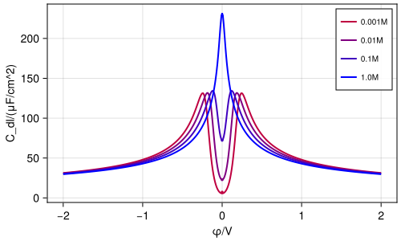

Double Layer Capacitance
Calculation of double layer capacitance of a symmetric 1:1 electrolyte.

Methods called:
module Example101_DLCap
using LessUnitful
using VoronoiFVM,ExtendableGrids,GridVisualize
using LiquidElectrolytes
using Colors
function main(;voltages=-2:0.01:2, ## Voltages/V
molarities=[0.001,0.01,0.1,1], ## Molarities/M
nref=0, ## Refinement level
scheme=:μex, ## Flux calculation scheme
κ=10.0, ## Solvation number
Plotter=nothing, ## Plotter
kwargs... ## Solver kwargs
)
# Obtain unit factors from LessUnitful.jl
@local_unitfactors nm cm μF V M m
# Create a standard 1D grid with grid spacing following geometric progression
hmin=1.0e-1*nm*2.0^(-nref)
hmax=1.0*nm*2.0^(-nref)
L=20.0*nm
X=geomspace(0,L,hmin,hmax)
grid=simplexgrid(X)
# Define boundary conditions
function bcondition(f,u,bnode,data)
(;iϕ,Γ_we,Γ_bulk,ϕ_we) = data
# Dirichlet ϕ=ϕ_we at Γ_we
boundary_dirichlet!(f,u,bnode,species=iϕ,region=Γ_we,value=ϕ_we)
# Bulk condition at Γ_bulk
bulkbcondition(f,u,bnode,data,region=Γ_bulk)
end
# Create electrolyte data
celldata=ElectrolyteData(nc=2,
Γ_we=1,
Γ_bulk=2;
scheme,
κ=fill(κ,2),
c_bulk=fill(0.01M,2))
# Create Poisson-Nernst-Planck system
cell=PNPSystem(grid;bcondition,celldata)
# Visualization
vis=GridVisualizer(;resolution=(500,300),
legend=:rt,
clear=true,
xlabel="φ/V",
ylabel="C_dl/(μF/cm^2)",
Plotter)
for imol=1:length(molarities)
color=RGB(1-imol/length(molarities),0,imol/length(molarities))
result=dlcapsweep(cell;
δ=1.0e-6,
voltages=collect(voltages)*V,
molarity=molarities[imol]*M,
kwargs...)
cdl0=dlcap0(celldata)
scalarplot!(vis,result.voltages/V,result.dlcaps/(μF/cm^2);
color,
clear=false,
label="$(molarities[imol])M",
markershape=:none)
scalarplot!(vis,[0],[cdl0]/(μF/cm^2);
clear=false,
markershape=:circle,
label="")
end
reveal(vis)
end
endThis page was generated using Literate.jl.